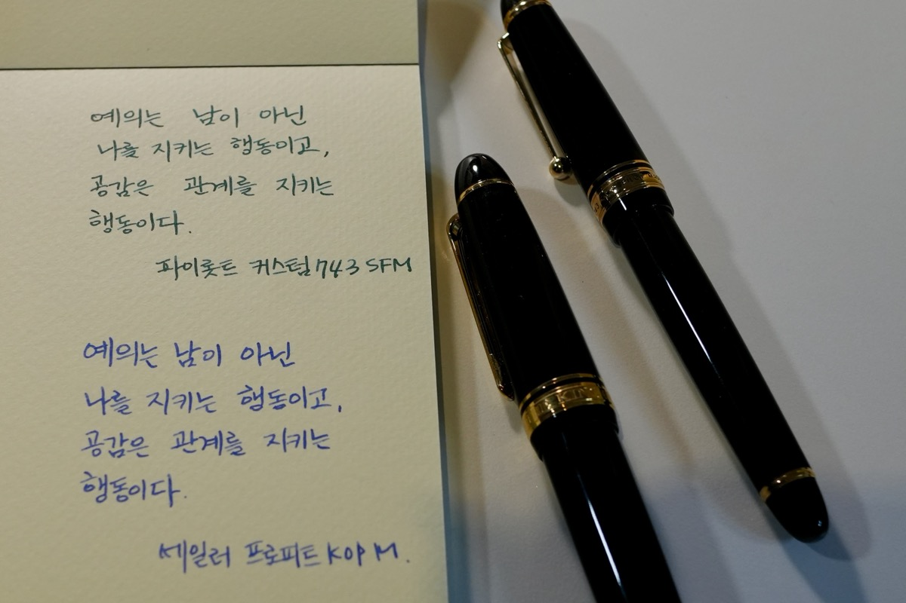
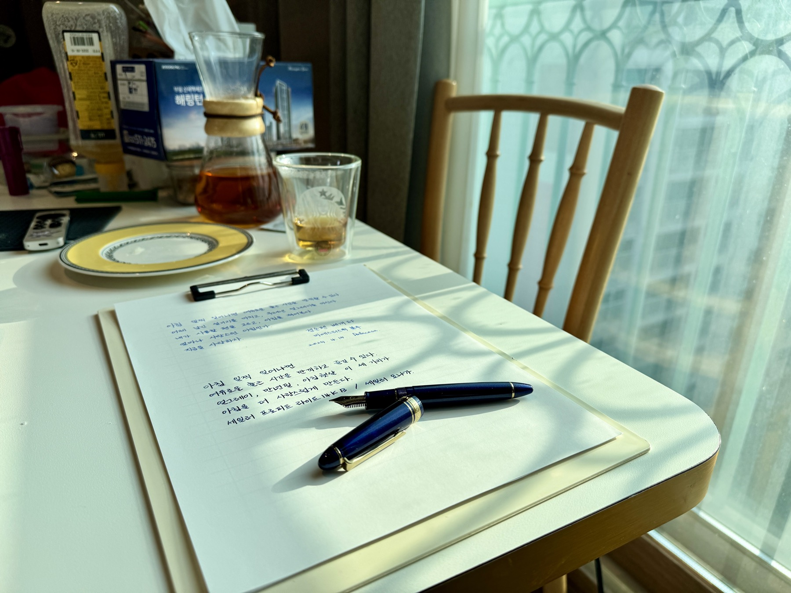
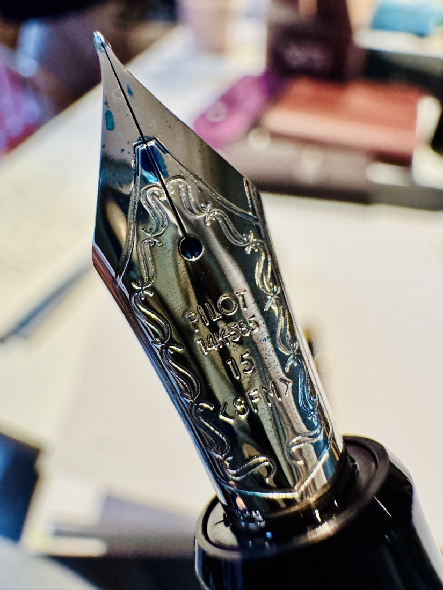
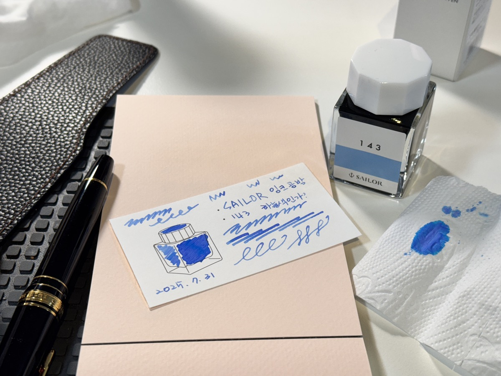

Fountain Pens
Fountain Pens / 만년필
살아남은 별
Welcome note
글이 좋아서가 아니었다. 마음에 쌓인 걸 몸 밖으로 빼내려 펜을 잡았고, 그렇게 겨우 살아났다.
지금도 무거운 날엔 펜부터 든다. 당신도 그렇다면, 우린 통한다.
안에 있는 걸 밖으로 꺼내는 일 — 그게 내 직업이 된 것도 우연은 아닐 거다.

글 / 사진 기록
손으로 쓴 문장과, 그 곁에 남은 사진을 모아둡니다.

